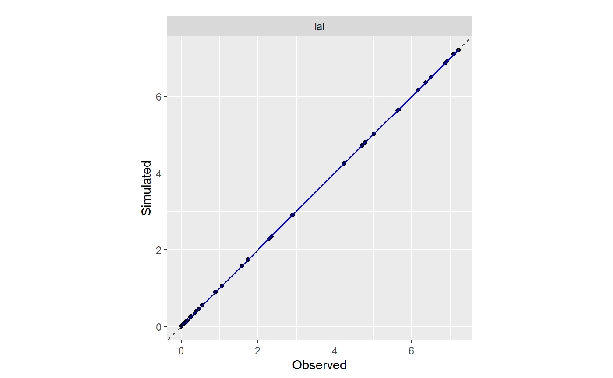
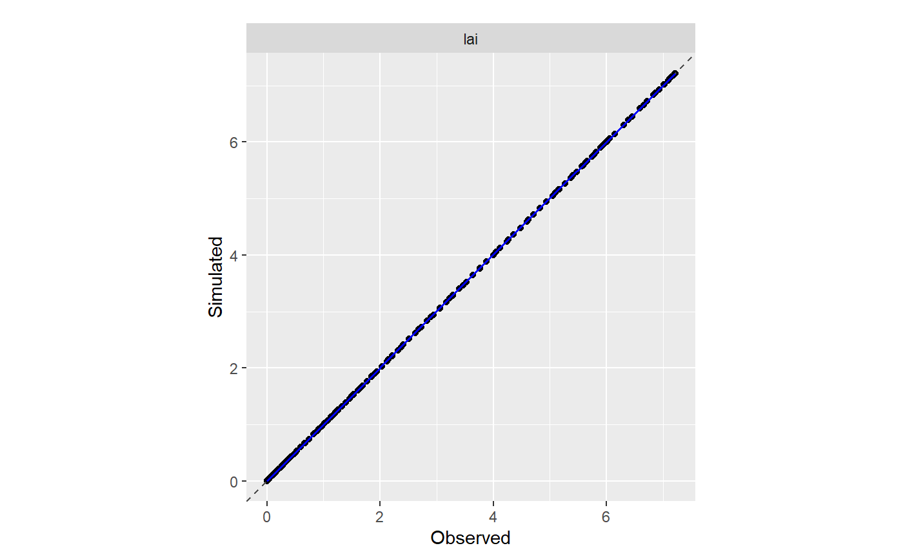

vignettes/Designing_a_model_wrapper.Rmd
Designing_a_model_wrapper.RmdR wrappers are necessary to couple crop models with CroptimizR. Indeed, the estim_param function will need to run the model (for which parameters have to be estimated), on a set of observed situations and for values of estimated parameters proposed by the selected algorithm. It will then compute the selected (least-square or likelihood) criterion using the resulting simulated values and corresponding observations. An R wrapper is thus basically an R function able to run model simulations for prescribed values of some of its input parameters and to return the values of its simulated outputs. It must have specific arguments, returned values and behavior, as detailed in the following.
The first section presents the concepts for building a basic version of a model wrapper. The second section section presents optional issues. The third one shows examples on a simple toy model.
We will detail here what is mandatory in terms of interface of the wrapper and expected behavior. Optional issues for more advanced users are detailed in the next section.
Please note that this basic version does not allow to perform simultaneous estimation of specific and varietal parameters on a dataset including several cultivars (i.e. as in the example detailed in (https://sticsrpacks.github.io/CroptimizR/articles/Parameter_estimation_Specific_and_Varietal.html)). Additional functionnalities are needed for that, as detailed in section “Optional issues”.
Here’s a header for a basic version of a model wrapper:
#' @title My model wrapper for CroptimizR
#'
#' @description This function runs my crop model on a set of situations (i.e. environments)
#' using the values of the parameters defined in the param_values argument. It returns
#' the values of the simulated outputs.
#'
#' @param param_values (optional) a named vector that contains the value(s) and name(s)
#' of the parameters to force for each situation to simulate. If not provided (or if is
#' NULL), the simulations will be performed using default values of the parameters
#' (e.g. as read in the model input files).
#'
#' @param sit_names Vector of situations names for which results must be returned.
#'
#' @param model_options List containing any information needed to run the model
#' (e.g. path to model input files and executable, ...)
#'
#' @return A list containing:
#' o `sim_list`: a `named list` (names = situations names) of data.frames (or tibbles) of
#` simulated output values (one element of the list per simulated situation)
#' o `error`: an error code indicating if at least one simulation ended with an error.
model_wrapper <- function( param_values=NULL, sit_names, model_options, ...) {
}Each argument detailed here must be defined for any CroptimizR model wrapper. You can use this header to develop yours. Be careful, “…” is mandatory at the end of the argument list since CroptimizR may give additional arguments for more advanced wrappers.
The shape of the param_values and sit_names arguments are imposed by CroptimizR. This is not the case of the model_options argument (except the fact that is must be a list): its content must be defined by the developper of the model wrapper. It is typically used to provide to the model wrapper what it needs to run the model (e.g. path to the model executable, path to the directory containing model input files for the situations to simulate, …). The user provides model_options to estim_param which gives it as is to the model wrapper.
It is advisable to define param_values as an optional argument, so that the model wrapper can be used directly by the user (i.e. outside of estim_param) to run the model using default values for all of its parameters.
A situation corresponds to a simulation (for example a specific treatment on a given soil for a given period).
To run your model from R, several technical solutions are possible depending on the language it is implemented with. A simple solution (although not the most computationally efficient) is to run its executable using the R function system2. Otherwise, different languages can be directly interfaced in R: for example Python, using the R package reticulate, C and C++ (see e.g. (https://www.r-bloggers.com/three-ways-to-call-cc-from-r/)), fortran (see e.g. (https://www.r-bloggers.com/fortran-and-r-speed-things-up/))…
The values of the parameters are specified in the param_values vector. The names of the parameters can be retrieved using names(param_values).
The value returned by the model wrapper must be a list, noted results in the following. This list must contain an element named sim_list. sim_list must be a named list (names = situations names) of size the number of situations to simulate and having the attribute “cropr_simulation” (to use the CroPlotR package). You can initialize it like this:
results$sim_list <- setNames(vector("list",length(sit_names)), nm = sit_names) attr(results$sim_list, "class")= "cropr_simulation"
Each element of the list should contains a data.frame (or a tibble) with the results obtained for all simulated variables and dates for the given situation.
The data.frames must have one column called Date containing the simulations dates, in Date or POSIXct format (see R function base::as.Date or base::as.POSIXct). The other columns contains the values of the simulated variables, and their names must be put as column names.
For example, if sit_names is `c(“situation1”,“situation2”,“situation3”), sim_list should look like:
sim_list$situation1
# A tibble: *** x ***
Date var1 var2 var3 ...
<dttm> <dbl> <dbl> <dbl>
1 1994-10-17 0 2.53 4.80
2 1994-10-18 0 2.31 4.66
3 1994-10-19 0 4.55 4.44
sim_list$situation2
# A tibble: *** x ***
Date var1 var2 var3 ...
<dttm> <dbl> <dbl> <dbl>
1 1995-10-17 0 2.60 4.80
2 1995-10-18 0 3.42 4.70
3 1995-10-19 0 5.25 4.45
sim_list$situation3
# A tibble: *** x ***
Date var1 var2 var3 ...
<dttm> <dbl> <dbl> <dbl>
1 1996-10-17 0 2.41 4.81
2 1996-10-18 0 3.03 4.71
3 1996-10-19 0 5.10 4.47If any simulation failed for any reason, use the R function warning to print any useful information about the error and set the variable results$error to TRUE (and to FALSE otherwise).
A typical pseudo-code implementation of a basic wrapper function is thus:
model_wrapper <- function( param_values=NULL, sit_names, model_options, ...) {
# Initializations
param_names <- names(param_values)
results <- list(sim_list = setNames(vector("list",length(sit_names)), nm = sit_names),
error=FALSE)
attr(results$sim_list, "class")= "cropr_simulation"
for (situation in sit_names) {
# overwrite model input parameters of names contained in param_names with values
# retrieved in param_values
# run the model for the given situation
# read the results and store the data.frame in result$sim_list[[situation]]
if (any_error_returned_by_the model_or_detected_in_its_results) {
warning("any_useful_information_to_describe_the_error")
results$error=TRUE
}
}
}
return(results)
}You can implement the following tests to check your wrapper is working as expected:
You can do that using the following code:
param_names<- # set the name of one or several model input parameters in a vector
param_lb<- # set the lower bounds of these parameters in a vector (no Inf or -Inf ...)
param_ub<- # set the upper bounds of these parameters in a vector (no Inf or -Inf ...)
var_name<- # give the name of an output variable sensitive to this (or these) parameter(s)
situation_name<- # give the name of the situation to simulate
model_options<- # give the model options
wrapper<- # give the name of your wrapper
param_values_min <- setNames(param_lb, param_names)
param_values_max <- setNames(param_ub, param_names)
sim_min <- wrapper(param_values = param_values_min, model_options = model_options,
sit_names=situation_name)
sim_max <- wrapper(param_values = param_values_max, model_options = model_options,
sit_names=situation_name)
print(paste("Sum of differences, variable",var_name,", situation",situation_name," = ",
sum(abs(sim_max$sim_list[[situation_name]][,var_name] -
sim_min$sim_list[[situation_name]][,var_name]),na.rm=TRUE)))
# Should give a value different from 0.check the results returned by the wrapper are identical to what is given by your model when used in a standard way (i.e. not through the wrapper)
Try to play with the estim_param function on your wrapper for a simple case (e.g. a single situation, variable and parameter, see e.g. (https://sticsrpacks.github.io/CroptimizR/articles/Parameter_estimation_simple_case.html)).
If you want your model wrapper to be used for simultaneous estimation of specific and varietal parameters on a dataset including several cultivars (e.g. as in the example detailed in (https://sticsrpacks.github.io/CroptimizR/articles/Parameter_estimation_Specific_and_Varietal.html)), the param_values argument must be able to receive a data.frame (or tibble) including a specific column named situation. In this case, the different lines of the data.frame will specify the values of the parameters to use in the model for the situation given in the column situation, as in the example below:
# A tibble: 4 x 4
situation p1 p2 p3
<chr> <dbl> <dbl> <dbl>
1 sit1 50.14 1.14 340.43
2 sit2 55.37 1.23 126.47
3 sit3 43.22 2.12 234.56
4 sit4 38.49 2.02 236.45Depending on the application (simple case or simultaneous specific and varietal parameters estimation), the estim_param function will thus pass to the model wrapper either a named vector or a data.frame, including or not the situation column. Both shapes have thus to be handled in the model wrapper in this case. This may be done as in the following piece of code:
# convert param_values in a tibble
param_values <- tibble::tibble(!!!param_values)
# loop on the situations to simulate
for (sit in situation_list) {
# extract the parameters values to apply for the given situation
params <- NULL
if (!is.null(param_values)) {
if (! "situation" %in% names(param_values)) {
params <- param_values
} else {
params <- dplyr::filter(param_values, situation==sit) %>%
dplyr::select(-situation)
}
}
# run the model with parameters values defined by params
}If possible implement any check you can concerning what is given to the wrapper. Print a message using the warning function and return TRUE in results$error if a problem is detected. It may be an unknown parameter name given in param_values, an unknown situation name given in sit_name, an incorrect model option (field of model_option) such as an incorrect model path for example …
If possible with your model (pay attention to concurrency access to model input and output files), managing parallel simulations of the different situations to simulate may drastically reduce the execution time.
The doParallel package can be used for that. There are specificities when coding a parallel loop: in particular, a list pre allocated outside of the loop is not shared between cores so return statements must be used inside. Here is an example for illustrating this issue:
# Code of an example of foreach loop algo
library("doParallel")## Le chargement a nécessité le package : foreach## Le chargement a nécessité le package : iterators## Le chargement a nécessité le package : paralleltest_parallel <- function(cores_nb = 1,
pa = FALSE,
max_it = 5) {
# pa: flag to switch from case with pre-allocated list to case with returned statement
# Launching the cluster
cl <- makeCluster(cores_nb)
registerDoParallel(cl)
# List preallocation
out_pa <- vector(mode = "list", max_it)
# Parallel loop
out <- foreach(i = 1:max_it) %dopar% {
if (pa) {
out_pa[[i]] <- i # store results in a pre-allocted list
} else {
return(i) # return the results
}
}
# Stopping the cluster
stopCluster(cl)
if (pa) {
return(out_pa)
} else {
return(out)
}
}
cores_nb=2
# Case with returned statement
out <- test_parallel(cores_nb)
# Case with pre-allocated list
out_pa <- test_parallel(cores_nb, TRUE)
out## [[1]]
## [1] 1
##
## [[2]]
## [1] 2
##
## [[3]]
## [1] 3
##
## [[4]]
## [1] 4
##
## [[5]]
## [1] 5## [[1]]
## NULL
##
## [[2]]
## NULL
##
## [[3]]
## NULL
##
## [[4]]
## NULL
##
## [[5]]
## NULLTwo additional arguments (var_names and sit_var_dates_mask) can be defined in the wrapper and are provided by the estim_param function when it calls the wrapper. They can be used to select the results to return and are particularly useful if this selection allows saving computation time or memory (for example if model results are read in a databasis with specific request per variable and/or date, or if model results are read in different files depending on the variables …).
var_names is a vector of variables names for which results must be returned.
sit_var_dates_mask is a list of data.frame similar to results$sim_list. It indicates the list of variables and dates for each situation for which results must be returned: if sit_var_dates_mask$situation1[j,"var1"] does not contain NA, then the simulated value of variable “var1” at date sit_var_dates_mask$situation1[j,"Date"] must be returned in results$sim_list[["situation1"]].
It is advised to define them as optionnal arguments with default value equal to NULL. If not given or if they are NULL, the wrapper should return results for all simulated variables. If both arguments are handled in the model wrapper code (which is not mandatory: none of them or only one of them can be handled) and non-null values are given for both, only sit_var_dates_mask should be taken into account since it is more detailed.
lai_toymodel <- function(year, max_lai=8, julday_incslope=100, inc_slope=5,
julday_decslope=200, dec_slope=2) {
# Simulate lai for a single crop over 2 years (from 01/01/year to 31/12/(year+1)
# with a simple double-logistic function
#
# Arguments
# - year: first year of simulation
# - max_lai: max value for lai
# - inc_slope and dec_slope: increasing and decreasing slope
# - julday_incslope and julday_decslope: julian days of maximal increasing and
# decreasing slopes
#
# Value
# - lai: vector of simulated lai
# - dates: vector of dates (POSIXct) for which lai is computed
end_day <- format(as.Date(paste0(year+1,"-12-31"), format = "%Y-%m-%d", origin=paste0(year,"-01-01")), "%j")
jul_days <- 1:as.numeric(end_day)
lai <- max_lai * ( 1/(1+exp((julday_incslope-jul_days)/inc_slope)) -
1/(1+exp((julday_decslope-jul_days)/dec_slope)) )
lai[lai<0] <- 0
dates <- as.POSIXct(as.character(as.Date(jul_days,
origin=paste0(year,"-01-01"))),
format = "%Y-%m-%d",tz="UTC")
return(list(dates=dates, lai=lai))
}
laitm_simple_wrapper <- function(param_values=NULL, sit_names, model_options, ...) {
# A basic wrapper for lai_toymodel
#
# Arguments
# - param_values: (optional) named vector containing the values of the lay_toymodel
# parameters to force among max_lai, inc_slope, dec_slope, julday_incslope and
# julday_decslope
# - sit_names: Vector of situations names for which results must be returned.
# In this case, the names of the situations are coded as "year_suffix"
# - model_options: not used in this case
# - ...: mandatory since CroptimizR will give additional arguments not used here
#
# Value:
# A named list of tibble per situation.
# Each tibble contains columns:
# - Date (POSIXct dates of simulated results),
# - One column per simulated variable (lai in this case)
#
# Details:
# - Runs the lai_toymodel for a set of situations defined in sit_names
# - Forces the parameters of lai_toymodel with the values given in param_values
# argument
# - Returns the required simulated values
#
results <- list(sim_list = setNames(vector("list",length(sit_names)), nm = sit_names),
error=FALSE)
attr(results$sim_list, "class")= "cropr_simulation"
for (sit in sit_names) {
# Retrieve year, emergence and crop_duration from situation name
tmp <- stringr::str_split(sit,"_")
year <- as.numeric(tmp[[1]][[1]])
# Check inputs
if (year<1) {
warning(paste("sit_name",sit,
"not well defined, first part is supposed to be a year!"))
results$error=TRUE
return(results)
}
if (!all(names(param_values) %in% c("max_lai", "inc_slope", "dec_slope",
"julday_incslope", "julday_decslope"))) {
warning(paste("Unknown parameters in param_values:",
paste(names(param_values),collapse = ",")))
results$error=TRUE
return(results)
}
# Call the lai_toymodel with varying arguments depending on what is given in
# param_values
res_laitm <- do.call('lai_toymodel', c(as.list(param_values),
list(year=year)))
# Fill the result variable
results$sim_list[[sit]] <- dplyr::tibble(Date=res_laitm$dates,
lai=res_laitm$lai)
}
return(results)
}The little code below shows an example of parameter estimation using this wrapper:
library(CroptimizR)
library(dplyr)
tmp <- laitm_simple_wrapper(sit_names="2005_a", param_values = c(inc_slope=25, dec_slope=10))
# Create synthetic observations by selecting simulated results
ind <- sort(sample(nrow(tmp$sim_list$`2005_a`),50))
obs_synth <- list(`2005_a`=tmp$sim_list$`2005_a`[ind,])
# Try to retrieve inc_slope and dec_slope values
param_info <- list(lb=c(inc_slope=1,dec_slope=1), ub=c(inc_slope=100,dec_slope=100))
optim_options <- list(nb_rep=5, maxeval=100, xtol_rel=1e-2)
res <- estim_param(obs_synth, crit_function = crit_ols,
model_function = laitm_simple_wrapper,
optim_options=optim_options,
param_info = param_info)## [1] "Working: 20.00%. ETA: 2.22"
## [1] "Working: 40.00%. ETA: 1.85"
## [1] "Working: 60.00%. ETA: 1.35"
## [1] "Working: 80.00%. ETA: 0.69"
## [1] "Working: 100.00%. ETA: 0.00"## [1] "Estimated value for inc_slope : 25.0026692254046"
## [1] "Estimated value for dec_slope : 10.0325780207203"
## [1] "Minimum value of the criterion: 0.000186671843605429"
## [1] "Complementary graphs and results can be found in D:/Home/sbuis/Documents/GitHub/CroptimizR/vignettes"
## Total time for parameter estimation: 5.28 sec elapsed## inc_slope dec_slope
## 25.00267 10.03258# Plot the simulations obtained with the optimized values of the parameters VS the observed ones using the CroPlotR package.
if(!require("CroPlotR")){
devtools::install_github("SticsRPacks/CroPlotR@*release")
library("CroPlotR")
}
tmp <- laitm_simple_wrapper(sit_names=c("2005_a","2006_b"),
param_values = res$final_values)
plot(tmp$sim_list,obs=obs_synth,type="scatter")## $all_situations
This one can be used to perform simultaneous estimation of specific and varietal parameters on a dataset including several cultivars.
laitm_simple_wrapper_v2 <- function(param_values=NULL, sit_names, model_options, ...) {
# A basic wrapper for lai_toymodel
#
# Arguments
# - param_values: (optional) a named vector or a tibble containing the values of the
# lay_toymodel parameters to force among max_lai, inc_slope, dec_slope,
# julday_incslope and julday_decslope. An optional column named Situation containing
# the name of the situations allows to define different values of the parameters
# for different situations.
# - sit_names: Vector of situations names for which results must be returned.
# In this case, the names of the situations are coded as "year_suffix"
# - model_options: not used in this case
# - ...: mandatory since CroptimizR will give additional arguments not used here
#
# Value:
# A named list of tibble per situation.
# Each tibble contains columns:
# - Date (POSIXct dates of simulated results),
# - One column per simulated variable (lai in this case)
#
# Details:
# - Runs the lai_toymodel for a set of situations defined in sit_names
# - Forces the parameters of lai_toymodel with the values given in param_values
# argument
# - Returns the required simulated values
#
results <- list(sim_list = setNames(vector("list",length(sit_names)),
nm = sit_names), error=FALSE)
attr(results$sim_list, "class")= "cropr_simulation"
param_values <- tibble::tibble(!!!param_values) # convert param_values in a tibble
for (sit in sit_names) {
# Retrieve year, emergence and crop_duration from situation name
tmp <- stringr::str_split(sit,"_")
year <- as.numeric(tmp[[1]][[1]])
# Check inputs
if (year<1) {
warning(paste("sit_name",sit,
"not well defined, first part is supposed to be a year!"))
results$error=TRUE
return(results)
}
# extract the parameters values to apply for the given situation
params <- NULL
if (!is.null(param_values)) {
if (! "situation" %in% names(param_values)) {
params <- param_values
} else {
params <- dplyr::filter(param_values, situation==sit) %>%
dplyr::select(-situation)
}
}
if (!all(names(params) %in% c("max_lai", "inc_slope", "dec_slope",
"julday_incslope", "julday_decslope"))) {
warning(paste("Unknown parameters in param_values:",
paste(names(param_values),collapse = ",")))
results$error=TRUE
return(results)
}
# Call the lai_toymodel with varying arguments depending on what is given in
# param_values
res_laitm <- do.call('lai_toymodel', c(as.list(params),
list(year=year)))
# Fill the result variable
results$sim_list[[sit]] <- dplyr::tibble(Date=res_laitm$dates,
lai=res_laitm$lai)
}
return(results)
}The code below shows an example of a simultaneous estimation of specific (dec_slope here) and varietal (inc_slope) parameters using this wrapper:
library(CroptimizR)
library(dplyr)
tmp <- laitm_simple_wrapper_v2(sit_names=c("2005_a","2006_b"),
param_values = dplyr::tibble(situation=c("2005_a","2006_b"),
inc_slope=c(25,50), dec_slope=c(10,10)))
# Create synthetic observations by selecting simulated results
length_2005_a <- nrow(tmp$sim_list$`2005_a`)
length_2006_b <- nrow(tmp$sim_list$`2006_b`)
obs_synth <- list(`2005_a`=tmp$sim_list$`2005_a`[seq(from=1, to=length_2005_a, by=3),],
`2006_b`=tmp$sim_list$`2006_b`[seq(from=1, to=length_2006_b, by=3),])
# Try to retrieve inc_slope and dec_slope values on both situations
param_info=list(inc_slope=list(sit_list=list("2005_a","2006_b"),
lb=c(1,1),ub=c(100,100)),
dec_slope=list(sit_list=list(c("2005_a","2006_b")),
lb=1,ub=100))
optim_options <- list(nb_rep=5, maxeval=100, xtol_rel=1e-2)
res <- estim_param(obs_synth, crit_function = crit_ols,
model_function = laitm_simple_wrapper_v2,
optim_options=optim_options,
param_info = param_info)## [1] "Working: 20.00%. ETA: 18.03"
## [1] "Working: 40.00%. ETA: 10.47"
## [1] "Working: 60.00%. ETA: 6.22"
## [1] "Working: 80.00%. ETA: 3.11"
## [1] "Working: 100.00%. ETA: 0.00"## [1] "Estimated value for inc_slope1 : 25.0136868343543"
## [1] "Estimated value for inc_slope2 : 49.8659887771331"
## [1] "Estimated value for dec_slope : 9.98174732784232"
## [1] "Minimum value of the criterion: 0.00155001138452905"
## [1] "Complementary graphs and results can be found in D:/Home/sbuis/Documents/GitHub/CroptimizR/vignettes"
## Total time for parameter estimation: 15.97 sec elapsed## inc_slope1 inc_slope2 dec_slope
## 25.013687 49.865989 9.981747# Plot the simulations obtained with the optimized values of the parameters VS the observed ones using the CroPlotR package.
if(!require("CroPlotR")){
devtools::install_github("SticsRPacks/CroPlotR@*release")
library("CroPlotR")
}
tmp <- laitm_simple_wrapper_v2(sit_names=c("2005_a","2006_b"),
param_values = dplyr::tibble(situation=c("2005_a","2006_b"),
inc_slope=c(res$final_values[["inc_slope1"]],res$final_values[["inc_slope2"]]), dec_slope=res$final_values[["dec_slope"]]))
plot(tmp$sim_list,obs=obs_synth,type="scatter")## $all_situations
More complex examples of crop model wrappers for CroptimizR can be found in the SticsOnR package (https://github.com/SticsRPacks/SticsOnR/blob/master/R/stics_wrapper.R) for the Stics model and in the ApsimOnR package (https://github.com/hol430/ApsimOnR/blob/master/R/apsimx_wrapper.R) for ApsimX model.